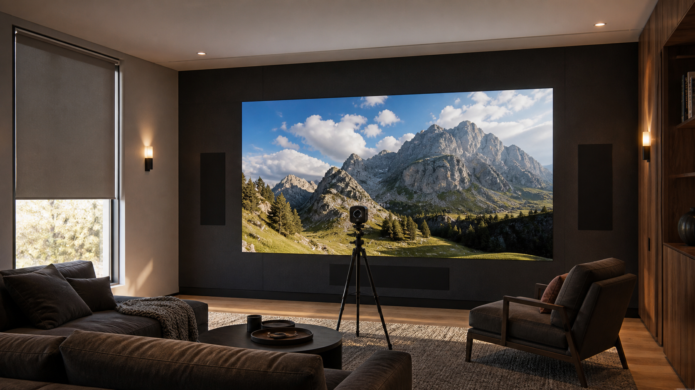

A home theater does not need to run a MicroLED wall at maximum output. In a controlled cinema, approximately 100 nits is a useful SDR reference starting point, while HDR is commissioned separately to preserve highlight detail and use the wall's available peak headroom. A mixed-light media room needs a brighter day preset. The correct number is the calibrated level that remains comfortable at the actual image size while preserving blacks, shadow detail, color, and highlights in the room's measured light.
This distinction matters because a 600-nit or 1,000-nit specification describes capability. It does not prescribe the brightness of every program, every scene, or every room mode. Opal engineers the display platform with usable luminance and contrast headroom. An authorized dealer then measures the finished environment, verifies the source path, and commissions separate operating modes around how the residence is used.
What a Nit Measures, and What It Does Not
A nit is one candela per square meter, written as cd/m2. It describes luminance, or the light leaving a surface in a given direction. Peak luminance is useful when comparing display capability, but it does not describe the brightness of an entire movie or the comfort of watching a large image for two hours.
For SDR calibration, 100 cd/m2 is a widely used reference starting point in controlled viewing. Professional calibration guidance also recognizes that a higher SDR target may be appropriate when ambient light is present. HDR is different. The signal carries a much wider range between deep shadows and bright highlights, and the display maps that signal within its measured capability. The full wall should not sit at peak output simply because small highlights can reach it.
Capability is not the operating target
Available luminance gives the integrator room to preserve contrast in ambient light and reproduce HDR highlights. The calibrated preset determines how much of that capability is used for a specific room condition and source format.
How Room Light Changes the Brightness Decision
Ambient light reaches the image through several paths. Daylight may strike the display directly, reflect from a pale floor or ceiling, or enter the viewer's field of vision from beside the wall. Practical fixtures can create the same problem when their beam angle or reflected glow raises the black floor. Increasing output can improve bright-image separation, but it cannot restore a black level that room light has already lifted.
That is why an integrator measures illumination at the display and reviews finish reflectance before choosing a target. A controlled private cinema with dark, matte finishes can use a restrained cinema mode. A room with pale stone, glass, or an open connection to daylight needs a different strategy. Our guide to MicroLED in sun-filled living rooms covers the architectural side of that brighter condition.
BlackFire helps by presenting a light-absorbing display surface engineered for stronger black-field performance in real rooms. It works with the lighting plan rather than replacing it. Fixture location, shade control, material reflectance, and viewing direction still belong in the specification. The deeper technical explanation is in our guide to BlackFire and reflected room light.
How Many Nits Are Enough for Each Home Theater Mode?
There is no responsible universal target for every residence, but there is a clear method. Establish a dark-room SDR reference, measure HDR behavior separately, and create brighter modes only for actual ambient-light conditions. The following matrix shows what changes between modes without turning a capability rating into a fixed prescription.
| Viewing mode | Room condition | Brightness approach | What is verified |
|---|---|---|---|
| Cinema SDR | Shades closed, practical lights off or very low, controlled dark finishes | Begin near the 100-nit SDR reference, then confirm comfort at the final image size | Black level, shadow detail, white balance, gamma, clipping, and long-view comfort |
| Cinema HDR | The same controlled viewing condition | Use measured peak capability as highlight headroom, not as full-field brightness | PQ or HLG tracking, tone mapping, highlight detail, color volume, and source metadata behavior |
| Evening media | Sconces or adjacent-room light remain on | Raise the operating target only enough to maintain separation from the ambient field | Dark-scene visibility, reflected light, fixture interaction, and viewing comfort |
| Day media | Controlled daylight or brighter general lighting is present | Use a dedicated measured preset and available display headroom | Illuminance at the wall, shade state, black-field lift, color stability, and transition back to cinema mode |
A room can need more than one correct answer. The owner may watch films in darkness, sports with guests and sconces on, and general content during the day. One fixed setting forces a compromise across all three. Separate scenes let the display, lighting, shades, audio, and source routing move together.
How Opal's Residential Brightness Capability Fits the Room
Opal's residential indoor configurations include 600-nit Onyx and Crystal walls and 1,000-nit Boulder walls. Onyx is the ultra-fine-pitch residential platform with NanoPix available at 0.7 mm. Crystal is a premium residential platform at 0.9 mm and 1.2 mm. Boulder provides 1,000-nit capability and SilkStream 240 Hz at 0.9 mm for rooms where motion and additional luminance headroom are central requirements.
These figures establish the platform's operating envelope. They do not mean a controlled cinema should be driven at the highest number. The integrator weighs closest viewing distance, pixel pitch, image area, room light, content, motion priorities, and calibration modes together. Our broader guide to choosing MicroLED for a home theater places brightness within that complete room specification.
Why HDR Needs Headroom Without Constant Brightness
HDR expands the range available to the program. ITU-R BT.2100 defines PQ and HLG approaches for HDR television, while ITU-R BT.2408 provides operational guidance for mapping and monitoring HDR images across displays with different luminance capabilities. For a residence, the useful conclusion is straightforward: the signal format, display capability, room condition, and mapping behavior must be evaluated together.
Peak output is most valuable when it remains available for highlights such as sunlight on metal, reflections on water, or a bright practical light within a dark scene. If average picture level is pushed too high in a dark room, the image can become tiring and the room may lose the visual separation that makes those highlights meaningful. The calibrated HDR mode should track the intended signal, preserve detail near peak white, and remain appropriate for the viewer's adaptation state.
The source chain matters as much as the wall. Streaming devices, disc players, processors, switching, extenders, and control logic can change format negotiation or metadata behavior. An authorized dealer verifies the actual path used in the finished room rather than assuming that every component label guarantees the final result.
What the Integrator Is Actually Deciding
The authorized integrator is not selecting a single brightness number from a product sheet. The work is to translate room conditions and viewing habits into measured, repeatable modes that the owner can use without managing the underlying display controls.
- Ambient conditionMeasure light at the wall and document the shade and fixture states for each viewing mode.
- Finish reflectanceReview the surfaces visible to the screen and viewer, including ceilings, floors, millwork, and glass.
- Image scaleConfirm whether a target remains comfortable across the actual image area and longest viewing sessions.
- SDR modeMeasure luminance, black level, grayscale, gamma, color, and clipping under the intended cinema condition.
- HDR modeVerify format recognition, EOTF behavior, peak handling, tone mapping, highlight detail, and color tracking.
- Source pathTest the devices, processors, transport, and switching the owner will actually use.
- Control scenesCoordinate display presets with shades, fixtures, source selection, and room use.
- Handoff recordSave pre- and post-calibration measurements, mode names, source settings, and the commissioning baseline.
Professional display-calibration workflows use instruments and test patterns to measure luminance, grayscale, color, gamma or EOTF behavior, clipping, and the result before and after adjustment. The dealer should also confirm uniformity across the assembled wall and verify that the programmed scenes call the intended mode every time.
What the Owner and Design Team Should Request
Ask for brightness to be documented as a set of room-specific operating modes, not as one maximum figure. The specification should identify the lighting and shade condition for each mode, the sources tested, the SDR and HDR targets, the measured results, and the control command that recalls the mode.
The architect and lighting designer should receive the same assumptions. A ceiling finish change, a new fixture aimed toward the wall, or an uncovered window can alter the viewing environment after the display target has been chosen. Coordinated documentation keeps the interior design, lighting scenes, and AV commissioning aligned through construction and handoff.
A practical acceptance standard
The room is ready when cinema, evening, and day modes produce repeatable measured results; dark scenes remain legible; bright highlights retain detail; the source path behaves consistently; and the owner can move between modes with one clear command.
Primary Technical References
- ITU-R BT.2100-3: Image parameter values for high dynamic range television
- ITU-R BT.2408-9: Guidelines for operational practices in HDR television production
- Portrait Displays: Evaluating displays with measured luminance, dynamic range, gamma, white balance, and color
Specify Brightness for the Finished Room
Your authorized Opal dealer can measure the viewing environment, match the residential wall to the room, and commission cinema, HDR, evening, and day modes around the way the residence is actually used.
Contact an Authorized Dealer